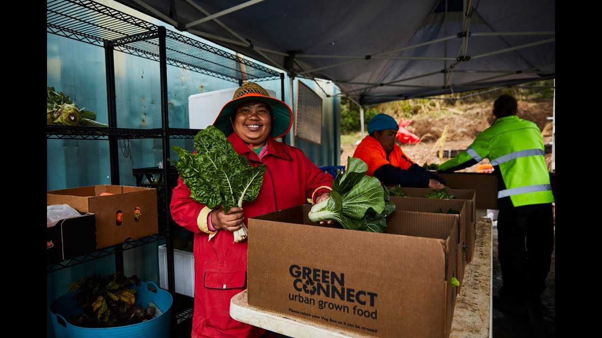

Who We Are
At GreenConnect, we are committed to creating a sustainable future by connecting communities with eco-friendly solutions.
Our mission is to promote environmental awareness, reduce waste, and support green initiatives that make a lasting impact on our planet.
What We Do
- Recycling & Waste Reduction - Helping communities manage waste responsibly
- Sustainable Living Programs - Educating and promoting eco-friendly lifestyles
- Community Partnerships - Working with businesses and organizations for sustainability
- Advocacy & Awareness - Spreading knowledge on environmental conservation
Connect With Us
We'd love to hear from you! Reach out through our contact details below:
Email: greenconnect@gmail.comPhone: (917)-685-4564